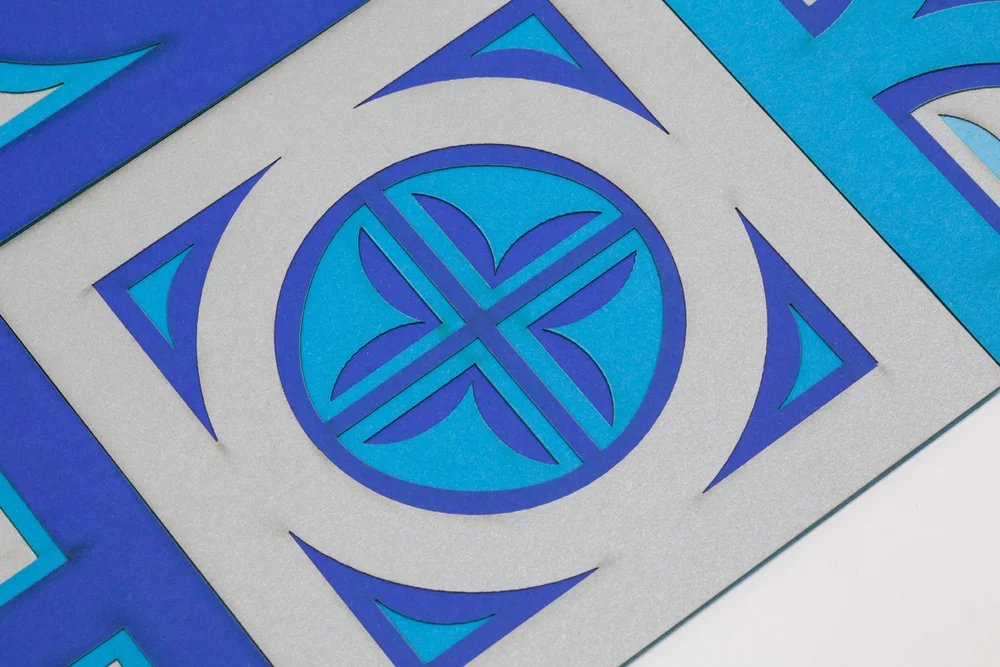
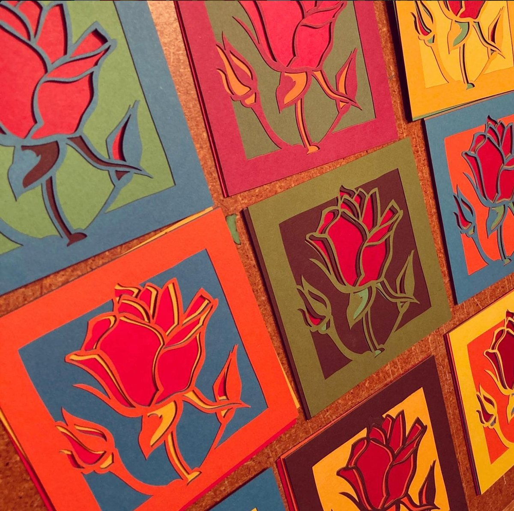
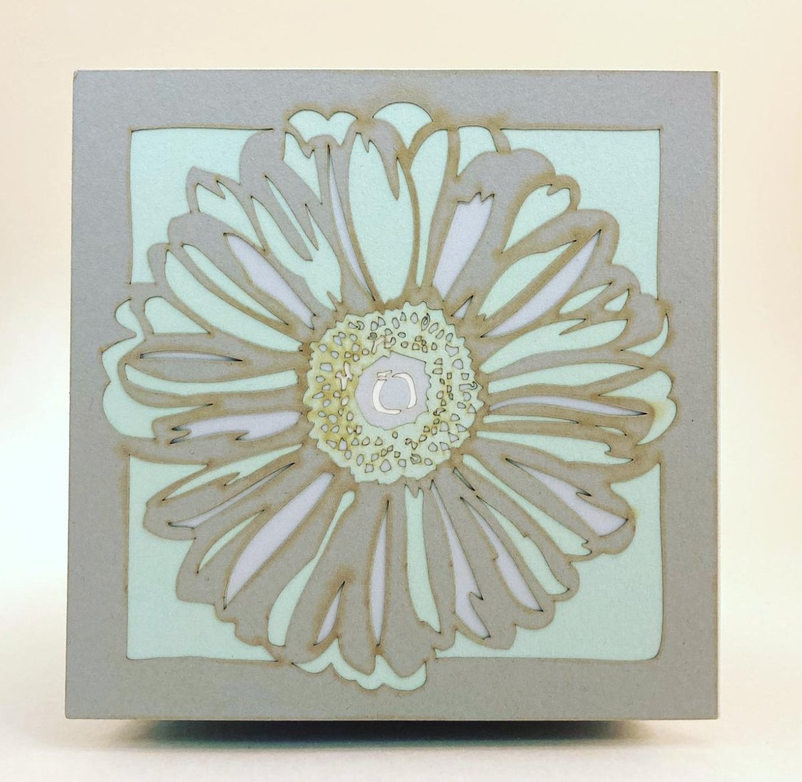
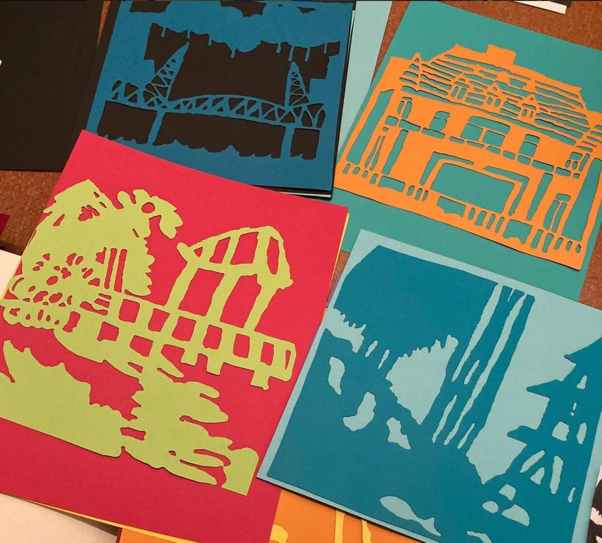

Beth Bundy works in illustration, cut-paper, and photography, often drawing inspiration from her international travel. Her layered paper cuts are hand-drawn, vectorized, and laser-cut, building up color and depth through stacked layers of paper. She also collaborates with students and community members to create work that reflects shared place and experience.
Beth teaches graphic design and photography at Lincoln High School in Portland. Her work has been shown at Clinton Street Coffeehouse and Rudy's Barbershop.


